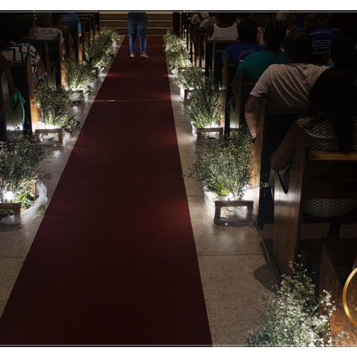
Artes Florais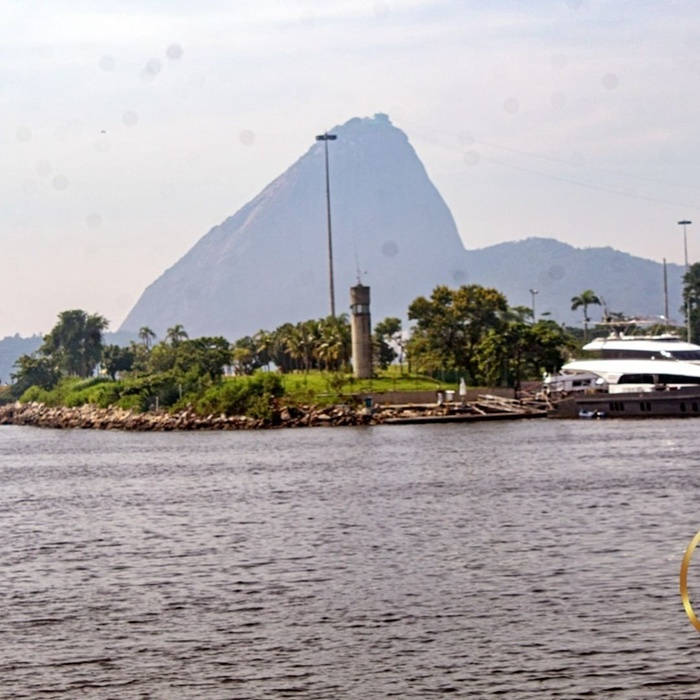
Céus & Concretos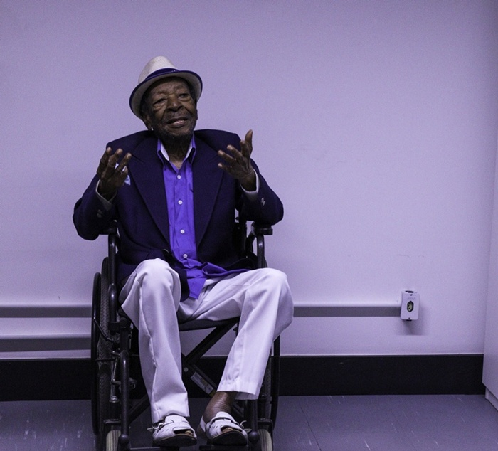
Compositor Noca da Portela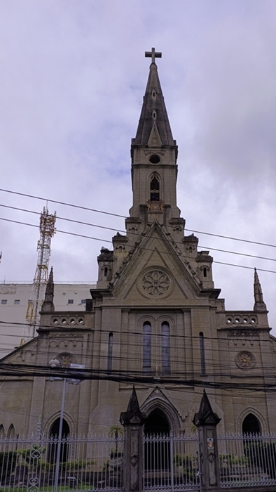
Engenho Dois Olhares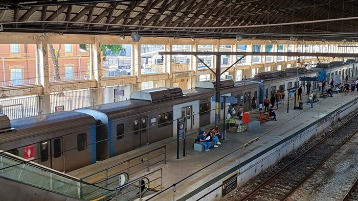
Engenho Vivo Estádio Nilton Santos
Estádio Nilton Santos
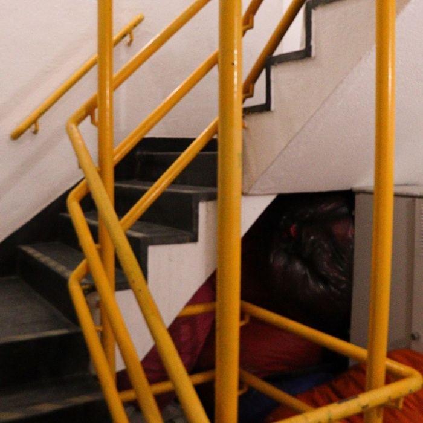
Geometria do Cotidiano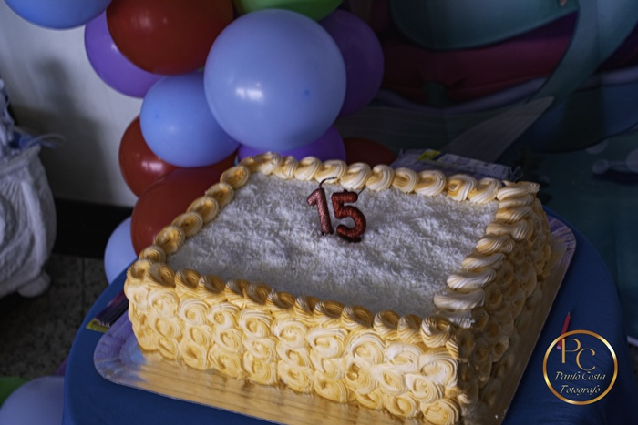
Manha de Luz na Guanabara Aniversário Maria Clara
Aniversário Maria Clara
 Muros e Vozes
Muros e Vozes
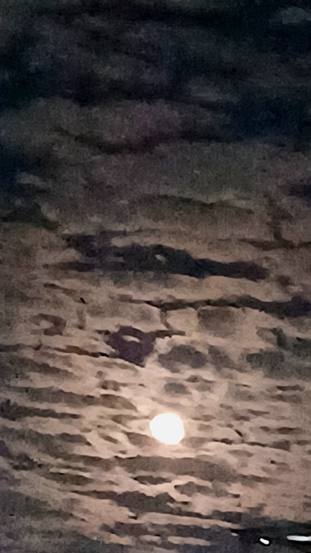
Natureza em Foco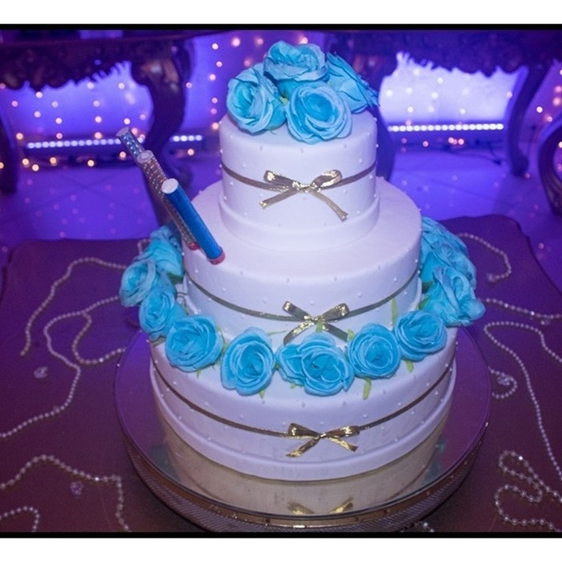
Aniversário Poly Gomes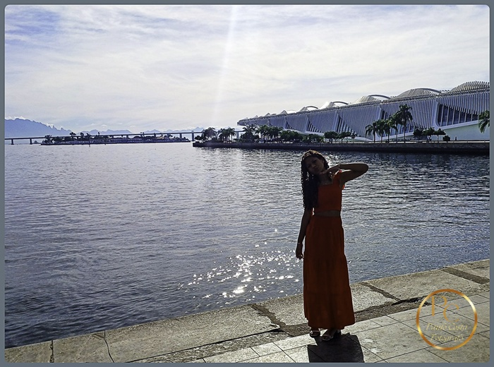
Aniversário Rayssa (Parte 1)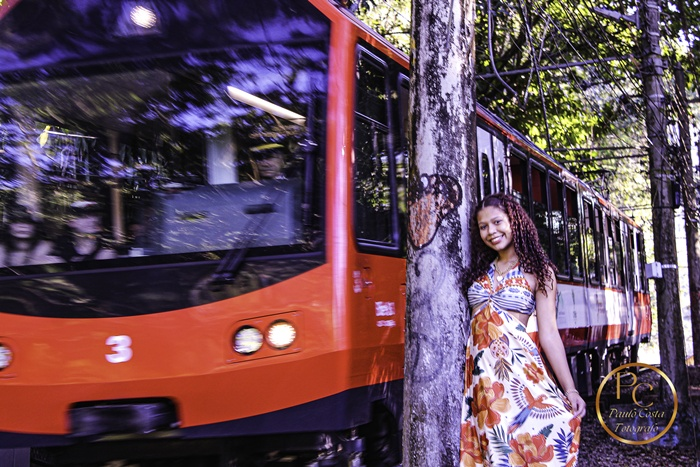
Aniversário Rayssa (Parte 1)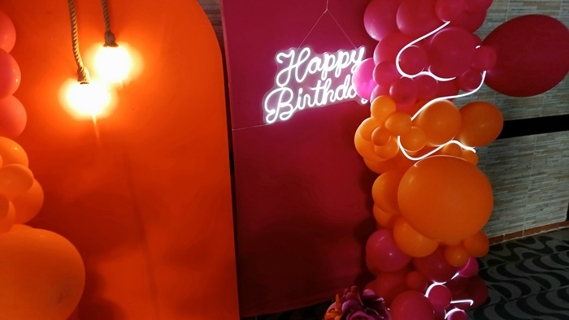
Aniversário Rute (70 Anos)